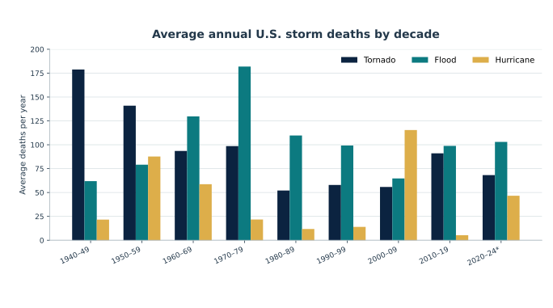
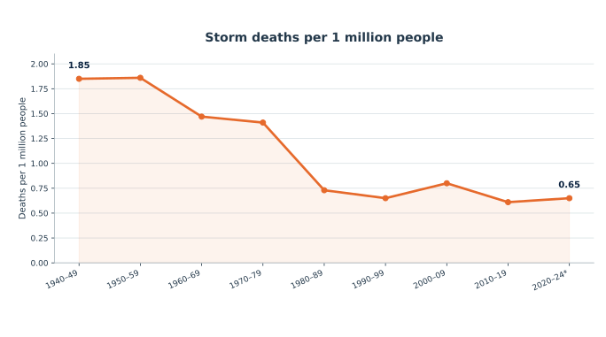
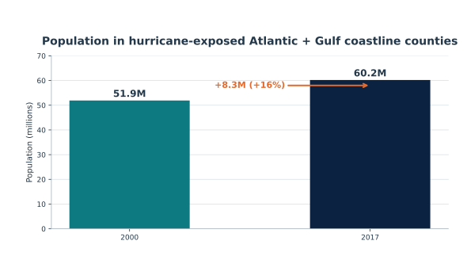

Official U.S. data show that deaths from tornadoes, floods, and hurricanes have generally gone down over time—especially after adjusting for population. At the same time, more people live in hurricane-prone coastal areas. That pattern fits the idea that Americans have gotten better at protecting themselves, but it does not prove adaptation is the only reason.

Deaths generally fell after the 1970s, though especially bad disasters can push up a decade.
NOAA/NWS Weather Related Fatality and Injury Statistics. 2020–24 is partial.

Population: U.S. Census Bureau.

In 185 Atlantic and Gulf coastline counties most exposed to hurricanes, population rose from 51.9M in 2000 to 60.2M in 2017 (+16%).
Important: population growth is not the same as domestic migration. Births and international immigration also matter.
U.S. Census Bureau, Coastline America (2019).
More people now live in risky coastal areas, but storm deaths—especially per person—are lower. That fits the idea that forecasting, evacuation, building standards, emergency response, behavior, and wealth have improved protection. It still does not prove exactly why deaths fell.
Illustrative classroom calculation, not a forecast.
Population growth is not the same as migration. Moving south does not always mean moving into a hurricane zone. Fewer deaths also do not prove climate risk itself is smaller.
SREX says long-run disaster losses rise largely because more people and valuable property are in harm’s way, along with vulnerability—not simply because the hazard changed.
IPCC, SREX (2012).
The 1995 heat-death spike shows that age, social isolation, access to air conditioning, and emergency response can strongly shape mortality.
CDC / NWS.
Burke and coauthors estimate temperature-attributable mortality using statistical relationships between temperature and deaths. That is much broader than NWS counts of deaths directly recorded under weather-event categories, so the two numbers should not be treated as the same measure.